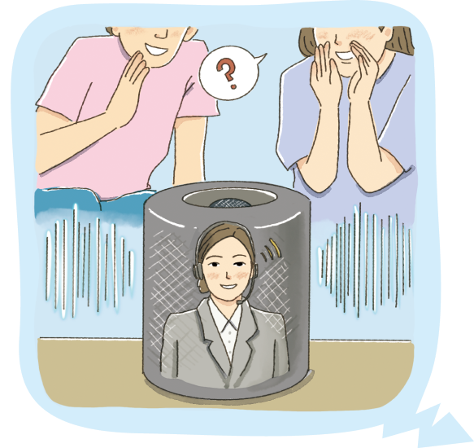

생각성에 대한 편견

날씨를 물으면 일기 예보를 검색하여 알려 주고, 듣고 싶은 노래를 요청하면
대신 틀어 주며, 우리 삶의 ‘비서’ 역할을 하는 인공지능 스피커 등 컴퓨터로 나오는
합성 목소리 대부분은 여성 목소리를 장착하고 있다.
왜 그럴까? 원인 중 하나는 관련 기업들이 보유한 자료에 여성의 목소리가 더 많았고,
이것이 이후 기술 개발에 영향을 미쳤다는 것이다. 역사적으로 과거 전화 교환 등의 업무를
여성이 했기 때문에 생활을 보조하는 기술 분야에서 여성의 목소리를 당연하게 생각한 것이다. 하지만 연구에 따르면, 이것은 여성과 남성에 게 각각 ‘적합한’ 일이 있다는 우리의 잘못된
생각을 반영한다. 실제로 컴퓨터로 만든 목소리가 필요한 시스템에서 남성의 목소리든 여성의 목소리든 정보 전달 효과의 차이가 거의 없다는 연구도 있다. 이로 인해 최근에는 기업들이 사용자가
음성 비서의 목소리를 직접 선택할 수 있도록 하고 있다.
- 『BBC뉴스코리아』, 2022. 6. 19
● 위와 같은 비슷한 사례가 또 있는지 찾아보자.
1970년대부터 자동차 안전을 위한 충돌 시험에서 사용되는 인체 모형은 남성이었고, 여성의 신체 특성을 반영한 여성 인체 모형이 본격적으로 등장한 것은 불과 몇 년 전의 일이라고 한다.